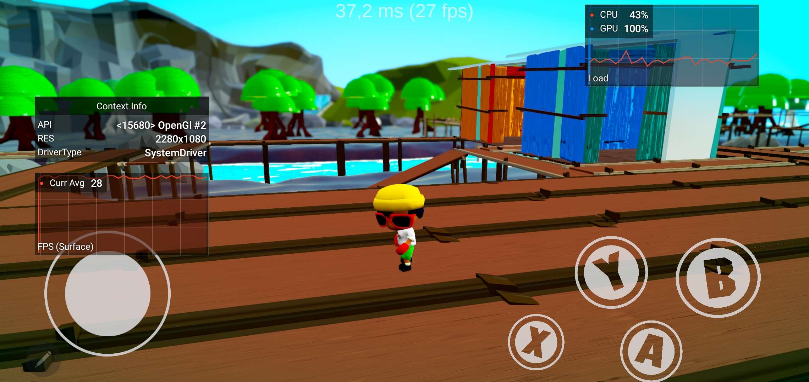

Unity / Trabalho em equipe01 / mud-life
Mud Life
Jogo de ação e aventura com foco em sobrevivência.
Minha contribuição
- Mecânicas do personagem principal
- Inteligência artificial dos caranguejos
- Sistema de pontuação e interface (UI)
Projeto em equipe · Publicado por rafanasper
Acessar jogo no itch.io